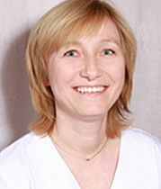

Наши терапевты
-
Хнычева Инга Станиславовна
Врач-стоматолог-терапевт первой категории
Ассистент: Пичужкина Олеся
График работы:
Нечетные: с 830 до 1330
Четные: с 1430 до 1930Кабинет терапевтической стоматологии, 2-й этаж, 1-я регистратура
-
Крицкая Ирина Михайловна
Заведующая отделением пародонтологии и профилактики. Врач-пародонтолог высшей категории.
Работает в «Жемчуге» с 2004 г.
Проводит лечение: по методике американской школы (Чикагского университета) — в разделе консервативной пародонтологии и по методике немецкой школы — в разделе хирургической пародонтологии. Повышение квалификации проходит на базе Санкт-Петербургского института стоматологии последипломного образования.
График работы:
Нечетные: с 830 до 1330
Четные: с 1430 до 1930Кабинет дентальной эстетики — 2-й этаж, 2-я регистратура